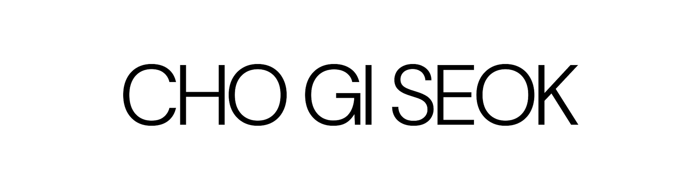
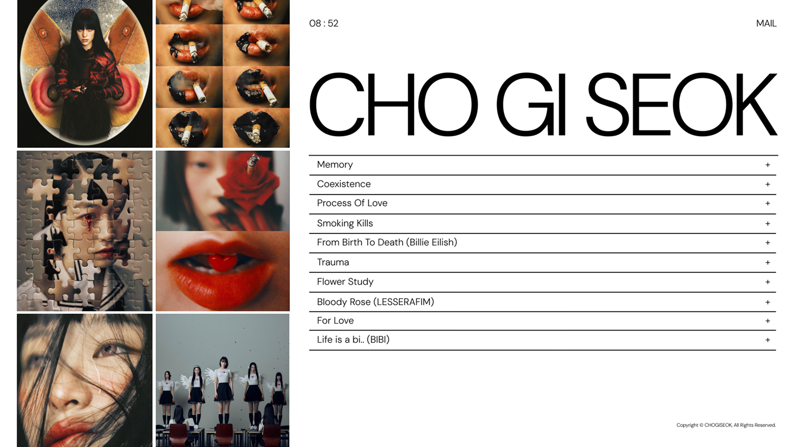
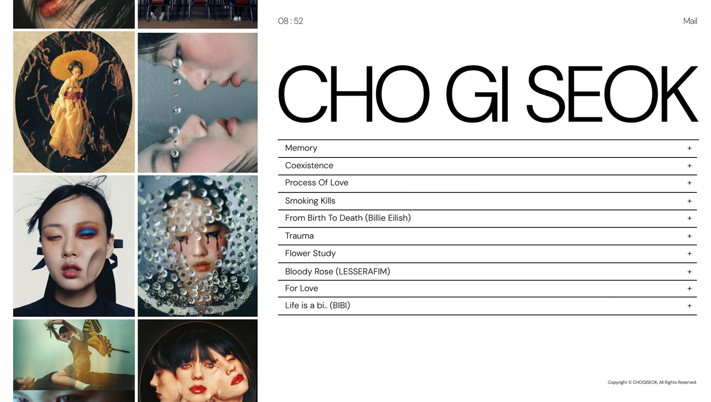
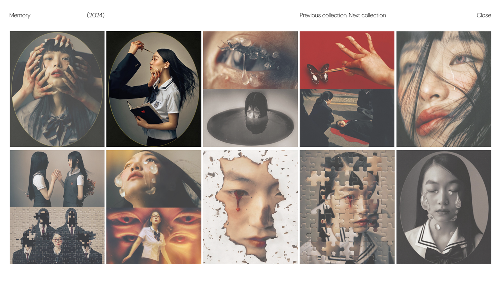
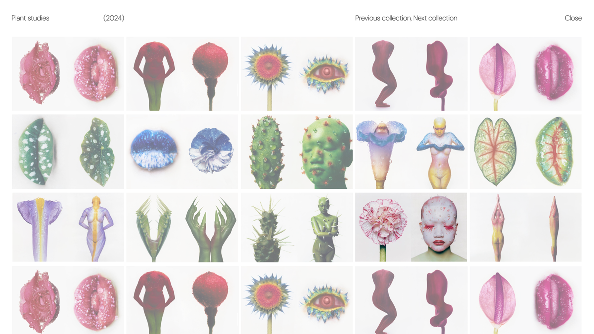
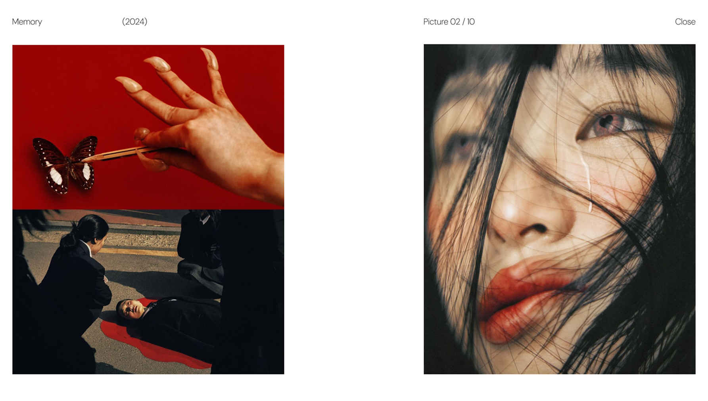
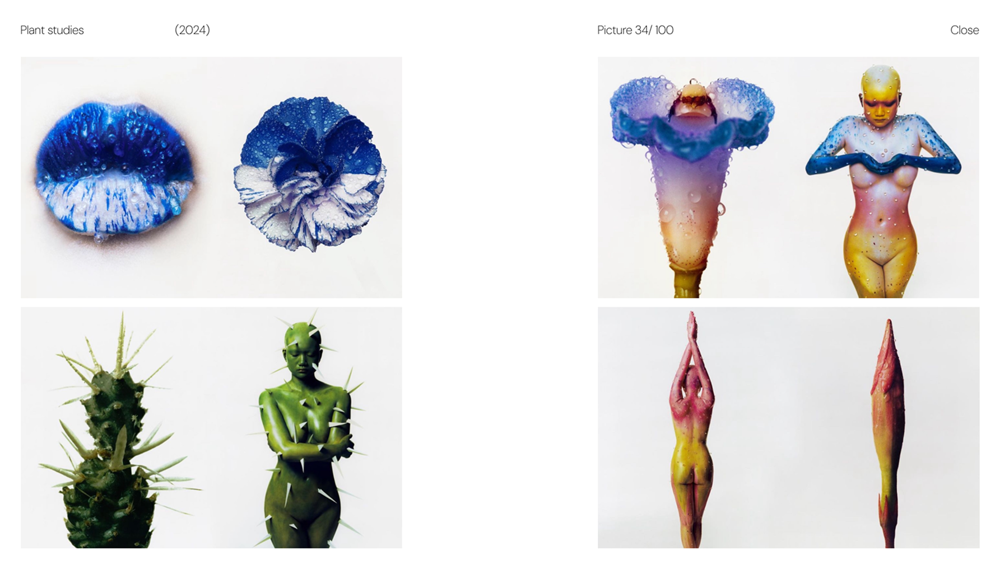
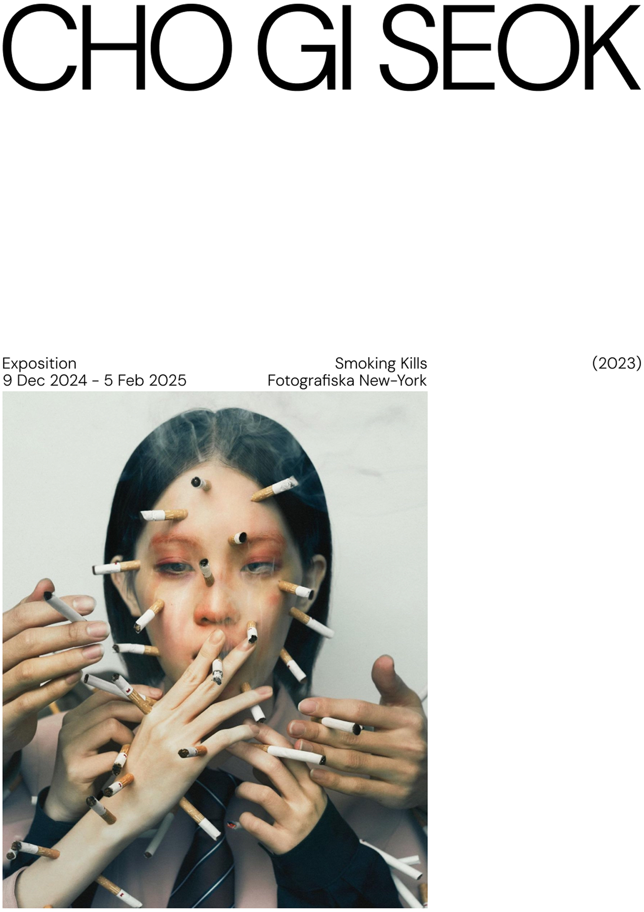
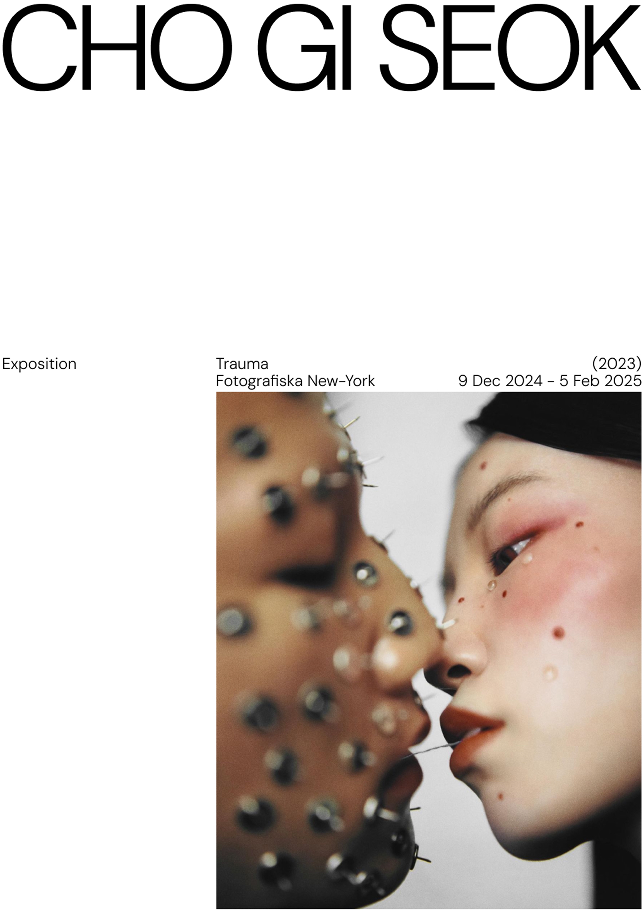

Cho Giseok is a South Korean photographer, art director
and visual artist. He is known for his unique style
blending photography, collage and digital art, often
with a surreal, avant-garde aesthetic. His work explores
themes of identity, fashion and contemporary culture,
incorporating dynamic compositions and vibrant colors.
Her work is frequently published in fashion magazines
and exhibited internationally.
I love his work, so I decided to create posters and a
website for 10 of my favorite photo series.
CHO GISEOK
LOGO, WEBSITE & POSTER
fictional project
2025








